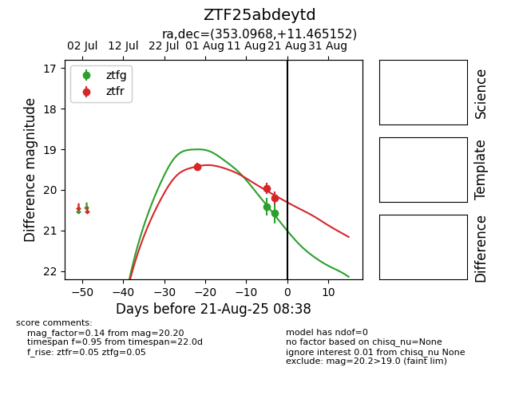

Target ZTF25abdeytd at 2025-08-21 08:38, see:
FINK: fink-portal.org/ZTF25abdeytd
Lasair: lasair-ztf.lsst.ac.uk/objects/ZTF25abdeytd
ALeRCE: alerce.online/object/ZTF25abdeytd
alt names
ZTF25abdeytd (ztf,alerce)
coordinates:
equatorial (ra, dec) = (353.0968,+11.46515)
galactic (l, b) = (93.9175,-46.90474)
photometry
last ztfg=20.57, ztfr=20.20
2 ztfg, 3 ztfr detections
